산업안전기사 (2016-08-21 기출문제)
1과목: 안전관리론
1. 안전보건교육의 교육지도 원칙에 해당되지 않은 것은?
- 피교육자 중심의 교육을 실시한다.
- 동기부여를 한다.
- 5관을 활용한다.
- 어려운 것부터 쉬운 것으로 시작한다.
(정답률: 93%)

2. 근로손실일수 산출에 있어서 사망으로 인한 근로손실연수는 보통 몇 년을 기준으로 산정하는가?
- 30
- 25
- 15
- 10
(정답률: 68%)
3. 어느 사업장에서 당해년도에 총 660명의 재해자가 발생하였다. 하인리히의 재해구성비율에 의하면 경상의 재해자는 몇 명으로 추정되겠는가?
- 58
- 64
- 600
- 631
(정답률: 77%)
4. 안전교육 방법 중 강의식 교육을 1시간 하려고 할 경우 가장 많이 소비되는 단계는?
- 도입
- 제시
- 적용
- 확인
(정답률: 79%)
5. 안전교육 중 제 2단계로 시행되며 같은 것을 반복하여 개인의 시행착오에 의해서만 점차 그 사람에게 형성되는 교육은?
- 안전기술의 교육
- 안전지식의 교육
- 안전기능의 교육
- 안전태도의 교육
(정답률: 78%)
6. 산업안전보건법상 안전보건개선계획의 수립ㆍ시행명령을 받은 사업주는 고용노동부장관이 정하는 바에 따라 안전보건개선계획서를 작성하여 그 명령을 받은 날부터 며칠 이내에 관할 지방고용노동관서의 장에게 제출해야 하는가?
- 15일
- 30일
- 45일
- 60일
(정답률: 47%)
7. 재해통계를 작성하는 필요성에 대한 설명으로 틀린 것은?
- 설비상의 결함요인을 개선 및 시정시키는데 활용한다.
- 재해의 구성요소를 알고 분포상태를 알아 대책을 세우기 위함이다.
- 근로자의 행동결함을 발견하여 안전 재교육 훈련자료로 활용한다.
- 관리책임 소재를 밝혀 관리자의 인책 자료로 삼는다.
(정답률: 91%)
8. 위험예지훈련에 있어 브레인 스토밍법의 원칙으로 적절하지 않은 것은?
- 무엇이든 좋으니 많이 발언한다.
- 지정된 사람에 한하여 발언의 기회가 부여된다.
- 타인의 의견을 수정하거나 덧붙여서 말하여도 좋다.
- 타인의 의견에 대하여 좋고 나쁨을 비평하지 않는다.
(정답률: 91%)
9. 산업안전보건법상 금지표지의 종류에 해당하지 않는 것은?
- 금연
- 출입금지
- 차량통행금지
- 적재금지
(정답률: 58%)
10. 작업내용 변경 시 일용근로자를 제외한 근로자의 사업 내 안전ㆍ보건 교육시간 기준으로 옳은 것은?
- 1시간 이상
- 2시간 이상
- 4시간 이상
- 6시간 이상
(정답률: 78%)
11. OFF.J.T(Off the job Training) 교육방법의 장점으로 옳은 것은?
- 개개인에게 적절한 지도훈련이 가능하다.
- 훈련에 필요한 업무의 계속성이 끊어지지 않는다.
- 다수의 대상자를 일괄적, 조직적으로 교육할 수 있다.
- 효과가 곧 업무에 나타나며, 훈련의 좋고 나쁨에 따라 개선이 용이하다.
(정답률: 85%)
12. 스트레스의 주요요인 중 환경이나 기타 외부에서 일어나는 자극요인이 아닌 것은?
- 자존심의 손상
- 대인관계 갈등
- 죽음, 질병
- 경제적 어려움
(정답률: 83%)
13. 크레인, 리프트 및 곤돌라는 사업장에 설치가 끝난 날부터 몇 년 이내에 최초의 안전검사를 실시해야 하는가?
- 1년
- 2년
- 3년
- 4년
(정답률: 71%)
14. 산업안전보건법상 고용노동부장관은 자율안전확인대상 기계ㆍ기구 등의 안전에 관한 성능이 자율안전기준에 맞지 아니하게 된 경우 관련사항을 신고한 자에게 몇 개월 이내의 기간을 정하여 자율안전확인표시의 사용을 금지하거나 자율안전기준에 맞게 개선하도록 명할 수 있는가?
- 1
- 3
- 6
- 12
(정답률: 65%)
15. 방진마스크의 형태에 따른 분류 중 그림에서 나타내는 것은 무엇인가?
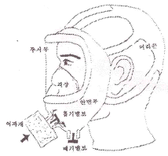
- 격리식 전면형
- 직결식 전면형
- 격리식 반면형
- 직결식 반면형
(정답률: 75%)
16. 무재해 운동을 추진하기 위한 조직의 3기둥으로 볼 수 없는 것은?
- 최고경영자의 경영자세
- 소집단 자주활동의 활성화
- 전 종업원의 안전요원화
- 라인관리자에 의한 안전보건의 추진
(정답률: 71%)
17. 산업재해의 발생형태 중 사람이 평면상으로 넘어졌을 때의 사고 유형은 무엇이라 하는가?
- 비래
- 전도
- 도괴
- 추락
(정답률: 81%)
18. 매슬로우(Maslow)의 욕구 5단계 이론 중 자기보존에 관한 안전욕구는 몇 단계에 해당되는가?
- 제1단계
- 제2단계
- 제3단계
- 제4단계
(정답률: 80%)
19. 헤드십의 특성이 아닌 것은?
- 지휘형태는 권위주의적이다.
- 권한행사는 임명된 헤드이다.
- 구성원과의 사회적 간격은 넓다.
- 상관과 부하와의 관계는 개인적인 영향이다.
(정답률: 87%)
20. 인간의 심리 중 안전수단이 생략되어 불안전 행위가 나타나는 경우와 가장 거리가 먼 것은?
- 의식과잉이 있는 경우
- 작업규율이 엄한 경우
- 피로하거나 과로한 경우
- 조명, 소음 등 주변 환경의 영향이 있는 경우
(정답률: 75%)
2과목: 인간공학 및 시스템안전공학
21. FTA에 사용되는 기호 중 “통상 사상”을 나타내는 기호는?
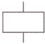
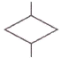
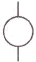
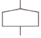
(정답률: 74%)
22. 두 가지 상태 중 하나가 고장 또는 결함으로 나타나는 비정상적인 사건은?
- 톱사상
- 정상적인 사상
- 결함사상
- 기본적인 사상
(정답률: 84%)
23. 시스템안전 프로그램에서의 최초단계 해석으로 시스템 내의 위험한 요소가 어떤 위험상태에 있는가를 정성적으로 평가하는 방법은?
- FHA
- PHA
- FTA
- FMEA
(정답률: 73%)
24. 의자 설계의 일반적인 원리로 가장 적절하지 않은 것은?
- 등근육의 정적 부하를 줄인다.
- 디스크가 받는 압력을 줄인다.
- 요부전만(腰部前灣)을 유지한다.
- 일정한 자세를 계속 유지하도록 한다.
(정답률: 78%)
25. 다음의 설명은 무엇에 해당되는 것인가?
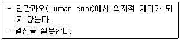
- 동작 조작 미스(Miss)
- 기억 판단 미스(Miss)
- 인지 확인 미스(Miss)
- 조치 과정 미스(Miss)
(정답률: 47%)
26. 다음 FT도에서 최소컷셋(Minimal cut set)으로만 올바르게 나열한 것은?
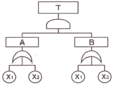
- [X1]
- [X1], [X2]
- [X1,X2,X3]
- [X1,X2],[X1,X3]
(정답률: 72%)
27. 인간-기계시스템의 설계 원칙으로 볼 수 없는 것은?
- 배열을 고려한 설계
- 양립성에 맞게 설계
- 인체특성에 적합한 설계
- 기계적 성능에 적합한 설계
(정답률: 75%)
28. 병렬로 이루어진 두 요소의 신뢰도가 각각 0.7일 경우, 시스템 전체의 신뢰도는?
- 0.30
- 0.49
- 0.70
- 0.91
(정답률: 77%)
29. 사업장에서 인간공학 적용분야로 틀린 것은?
- 제품설계
- 산업독성학
- 재해ㆍ질병예방
- 작업장 내 조사 및 연구
(정답률: 73%)
30. 신호검출이론(SDT)에서 두 정규분포 곡선이 교차하는 부분에 판별기준이 놓였을 경우 Beta값으로 맞는 것은?
- Beta = 0
- Beta < 1
- Beta = 1
- Beta > 1
(정답률: 66%)
31. 인간이 낼 수 있는 최대의 힘을 최대근력이라고 하며 인간은 자기의 최대근력을 잠시 동안만 낼 수 있다. 이에 근거할 때 인간이 상당히 오래 유지할 수 있는 힘은 근력의 몇 % 이하인가?
- 15%
- 20%
- 25%
- 30%
(정답률: 59%)
32. 소리의 크고 작은 느낌은 주로 강도의 함수이지만 진동수에 의해서도 일부 영향을 받는다. 음량을 나타내는 척도인 phon의 기준 순음 주파수는?
- 1000Hz
- 2000Hz
- 3000Hz
- 4000Hz
(정답률: 67%)
33. 위험관리에서 위험의 분석 및 평가에 유의할 사항으로 적절하지 않은 것은?
- 기업 간의 의존도는 어느 정도인지 점검한다.
- 발생의 빈도보다는 손실의 규모에 중점을 둔다.
- 작업표준의 의미를 충분히 이해하고 있는지 점검한다.
- 한 가지의 사고가 여러 가지 손실을 수반하는지 확인한다.
(정답률: 35%)
34. 작업장의 소음문제를 처리하기 위한 적극적인 대책이 아닌 것은?
- 소음의 격리
- 소음원을 통제
- 방음보호 용구 사용
- 차폐장치 및 흡음재 사용
(정답률: 84%)
35. 안전성 평가 항목에 해당하지 않은 것은?
- 작업자에 대한 평가
- 기계설비에 대한 평가
- 작업공정에 대한 평가
- 레이아웃에 대한 평가
(정답률: 58%)
36. 정량적 표시장치의 용어에 대한 설명 중 틀린 것은?(오류 신고가 접수된 문제입니다. 반드시 정답과 해설을 확인하시기 바랍니다.)
- 눈금단위(scale unit) : 눈금을 읽는 최소 단위
- 눈금범위(scale range) : 눈금의 최고치와 최저치의 차
- 수치간격(numbered interval) : 눈금에 나타낸 인접 수치 사이의 차
- 눈금간격(graduatiom interval) : 최대눈금선 사이의 값 차
(정답률: 66%)
37. 강의용 책걸상을 설계할 때 고려해야 할 변수와 적용할 인체측정자료 응용원칙이 적절하게 연결된 것은?
- 의자 높이 – 최대 집단치 설계
- 의자 깊이 – 최대 집단치 설계
- 의자 너비 – 최대 집단치 설계
- 책상 높이 – 최대 집단치 설계
(정답률: 77%)
38. 촉감의 일반적인 척도의 하나인 2점문턱값(two-point threshold)이 감소하는 순서대로 나열된 것은?
- 손가락 → 손바닥 → 손가락 끝
- 손바닥 → 손가락→ 손가락 끝
- 손가락 끝 → 손가락 → 손바닥
- 손가락 끝 → 손바닥 → 손가락
(정답률: 76%)
39. 산업안전보건법령에 따라 기계ㆍ기구 및 설비의 설치ㆍ이전 등으로 인해 유해ㆍ위험방지계획서를 제출하여야 하는 대상에 해당하지 않는 것은?
- 건조 설비
- 공기압축기
- 화학설비
- 가스집합 용접장치
(정답률: 58%)
40. 설계단계에서부터 보전에 불필요한 설비를 설계하는 것의 보전방식은?
- 보전예방
- 생산보전
- 일상보전
- 개량보전
(정답률: 74%)
3과목: 기계위험방지기술
41. 방호장치의 설치목적이 아닌 것은?
- 가공물 등의 낙하에 위한 위험 방지
- 위험부위와 신체의 접촉방지
- 비산으로 인한 위험방지
- 주유나 검사의 편리성
(정답률: 87%)
42. 아세틸렌 및 가스집합 용접장치의 저압용 수봉식 안전기의 유효수주는 최소 몇 mm 이상을 유지해야 하는가?
- 15
- 20
- 25
- 30
(정답률: 42%)
43. 크레인 로프에 질량 2000kg의 물건을 10m/s2의 가속도로 감아올릴 때, 로프에 걸리는 총 하중은 약 몇 kN인가?
- 39.6
- 29.6
- 19.6
- 9.6
(정답률: 56%)
44. 보일러 압력방출장치의 종류에 해당하지 않는 것은?
- 스프링식
- 중추식
- 플런저식
- 지렛대식
(정답률: 49%)
45. 휴대용 연삭기 덮개의 각도는 몇 도 이내인가?
- 60°
- 90°
- 125°
- 180°
(정답률: 68%)
46. 프레스의 종류에서 슬라이드 운동기구에 의한 분류에 해당하지 않는 것은?
- 액압 프레스
- 크랭크 프레스
- 너클 프레스
- 마찰 프레스
(정답률: 50%)
47. 양중기에 해당하지 않는 것은?
- 크레인
- 리프트
- 체인블럭
- 곤돌라
(정답률: 80%)
48. 비파괴시험의 종류가 아닌 것은?
- 자분 탐상시험
- 침투 탐상시험
- 와류 탐상시험
- 샤르피 충격시험
(정답률: 85%)
49. 동력프레스의 종류에 해당하지 않는 것은?
- 크랭크 프레스
- 푸트 프레스
- 토글 프레스
- 액압 프레스
(정답률: 49%)
50. 목재가공용 등근톱의 톱날 지름이 500mm 일 경우 분할날의 최소길이는 약 몇 mm 인가?
- 462
- 362
- 262
- 162
(정답률: 41%)
51. 연삭숫돌의 파괴원인이 아닌 것은?
- 외부의 충격을 받았을 때
- 플랜지가 현저히 작을 때
- 회전력이 결합력보다 클 때
- 내ㆍ외면의 플랜지 지름이 동일할 때
(정답률: 70%)
52. 롤러기의 급정지장치 설치기준으로 틀린 것은?
- 손조작식 급정지장치의 조작부는 밑면에서 1.8m 이내에 설치한다.
- 복부조작식 급정지장치의 조작부는 밑면에서 0.8m 이상, 1.1m 이내에 설치한다.
- 무릎조작식 급정지장치의 조작부는 밑면에서 0.8m 이내에 설치한다.
- 설치위치는 급정지장치의 조작부 중심점을 기준으로 한다.
(정답률: 72%)
53. 산업안전보건법상 보일러에 설치하는 압력방출장치에 대하여 검사 후 봉인에 사용되는 재료로 가장 적합한 것은?
- 납
- 주석
- 구리
- 알루미늄
(정답률: 82%)
54. 밀링머신 작업의 안전수칙으로 적절하지 않은 것은?
- 강력절삭을 할 때는 일감을 바이스로부터 길게 물린다.
- 일감을 측정할 때는 반드시 정지시킨 다음에 한다.
- 상하 이송장치의 핸들은 사용 후 반드시 빼두어야 한다.
- 커터는 될 수 있는 한 컬럼에 가깝게 설치한다.
(정답률: 71%)
55. 지게차의 헤드가드(head guard)는 지게차 최대하중의 몇 배가 되는 등분포정하중에 견딜 수 있는 강도를 가져야 하는 가?
- 2
- 3
- 4
- 5
(정답률: 71%)
56. 기계설비의 작업능률과 안전을 위한 배치(layout)의 3단계를 올바른 순서대로 나열한 것은?
- 지역배치 → 건물배치 → 기계배치
- 건물배치 → 지역배치 → 기계배치
- 기계배치 → 건물배치 → 지역배치
- 지역배치 → 기계배치 → 건물배치
(정답률: 81%)
57. 프레스기의 금형을 부착ㆍ해체 또는 조정하는 작업을 할 때, 슬라이드가 갑자기 작동함으로써 발생하는 근로자의 위험을 방지하기 위해 사용해야 하는 것은?
- 방호울
- 안전블록
- 시건장치
- 날접촉예방장치
(정답률: 82%)
58. 와이어로프의 지름 감소에 대한 폐기기준으로 옳은 것은?
- 공칭지름의 1퍼센트 초과
- 공칭지름의 3퍼센트 초과
- 공칭지름의 5퍼센트 초과
- 공칭지름의 7퍼센트 초과
(정답률: 80%)
59. 플레이너 작업시의 안전대책이 아닌 것은?
- 베드 위에 다른 물건을 올려놓지 않는다.
- 바이트는 되도록 짧게 나오도록 설치한다.
- 프레임 내의 피트(pit)에는 뚜껑을 설치한다.
- 칩 브레이커를 사용하여 칩이 길게 되도록 한다.
(정답률: 86%)
60. 산업안전보건법상 유해ㆍ위험방지를 위한 방호조치를 하지 아니하고는 양도, 대여, 설치 또는 사용에 제공하거나, 양도ㆍ대여를 목적으로 진열해서는 아니 되는 기계ㆍ기구가 아닌 것은?
- 예초기
- 진공포장기
- 원심기
- 롤러기
(정답률: 46%)
4과목: 전기위험방지기술
61. 가로등의 접지전극을 지면으로부터 75cm 이상 깊은 곳에 매설하는 주된 이유는?
- 전극의 부식을 방지하기 위하여
- 접촉 전압을 감소시키기 위하여
- 접지 저항을 증가시키기 위하여
- 접지선의 단선을 방지하기 위하여
(정답률: 49%)
62. 내압방폭 금속관배선에 대한 설명으로 틀린 것은?
- 전선관은 박강전선관을 사용한다.
- 배관 인입부분은 씰링피팅(Sealing Fitting)을 설치하고 씰링콤파운드로 밀봉한다.
- 전선관과 전기기기와의 접속은 관용평형나사에 의해 완전나사부가 “5턱”이상 결합되도록 한다.
- 가용성을 요하는 접속부분에는 플렉시블 피팅(Flexible Fitting)을 사용하고, 플렉시블 피팅은 비틀어서 사용해서는 안 된다.
(정답률: 53%)
63. 정전용량 C1(μF)과 C2(μF)가 직렬 연결된 회로에 E(V)로 송전되다 갑자기 정전이 발생하였을 때, C2 단자의 전압을 나타낸 식은?
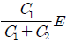
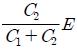
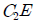
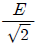
(정답률: 67%)
64. 충전선로의 활선작업 또는 활선근접작업을 하는 작업자의 감전위험을 방지하기 위해 착용하는 보호구로서 가장 거리가 먼 것은?
- 절연장화
- 절연장갑
- 절연안전모
- 대전방지용 구두
(정답률: 82%)
65. 인체의 피부저항은 피부에 땀이 나있는 경우 건조 시 보다 약 어느 정도 저하되는가?
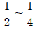
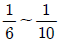
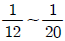
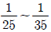
(정답률: 67%)
66. 정전기 재해방지를 위하여 불활성화 할 수 없는 탱크, 탱크롤리 등에 위험물을 주입하는 배관 내 액체의 유속제한에 대한 설명으로 틀린 것은?
- 물이나 기체를 혼합하는 비수용성 위험물의 배관 내 유속은 1m/s 이하로 할 것
- 저항률이 1010Ωㆍ㎝ 미만의 도전성 위험물의 배관유속은 매초 7m 이하로 할 것
- 저항률이 1010Ωㆍ㎝ 이상인 위험물의 배관유속은 관내경이 0.⑤m이면 매초 3.5m 이하로 할 것
- 이황화탄소 등과 같이 유동대전이 심하고 폭발위험성이 높은 것은 배관 내 유속은 5m/s 이하로 할 것
(정답률: 65%)
67. 정전기로 인하여 화재로 진전되는 조건 중 관계가 없는 것은?
- 방전하기에 충분한 전위차가 있을 때
- 가연성가스 및 증기가 폭발한계 내에 있을 때
- 대전하기 쉬운 금속부분에 접지를 한 상태일 때
- 정전기의 스파크 에너지가 가연성가스 및 증기의 최소점화 에너지 이상일 때
(정답률: 68%)
68. 화염일주한계에 대한 설명으로 옳은 것은?
- 폭발성 가스와 공기의 혼합기에 온도를 높인 경우 화염이 발생할 때까지의 시간 한계치
- 폭발성 분위기에 있는 용기의 접합면 틈새를 통해 화염이 내부에서 외부로 전파되는 것을 저지할 수 있는 틈새의 최대간격치
- 폭발성 분위기 속에서 전기불꽃에 의하여 폭발을 일으킬 수 있는 화염을 발생시키기에 충분한 교류파형의 1주기치
- 방폭설비에서 이상이 발생하여 불꽃이 생성된 경우에 그것이 점화원으로 작용하지 않도록 화염의 에너지를 억제 하여 폭발 하한계로 되도록 화염 크기를 조정하는 한계치
(정답률: 77%)
69. 접지저항 저감 방법으로 틀린 것은?
- 접지극의 병렬 접지를 실시한다.
- 접지극의 매설 깊이를 증가시킨다.
- 접지극의 크기를 최대한 작게 한다.
- 접지극 주변의 토양을 개량하여 대지 저항률을 떨어뜨린다.
(정답률: 53%)
70. Dalziel에 의하여 동물실험을 통해 얻어진 전류값을 인체에 적용했을 때 심실세동을 일으키는 전기에너지(J)는? (단, 인체 전기저항은 500Ω으로 보며, 흐르는 전류
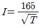
mA로 한다.)- 9.8
- 13.6
- 19.6
- 27
(정답률: 80%)
71. 접지공사에 관한 설명으로 옳은 것은?(관련 규정 개정전 문제로 여기서는 기존 정답인 1번을 누르면 정답 처리됩니다. 자세한 내용은 해설을 참고하세요.)
- 뇌해 방지를 위한 피뢰기는 제1종 접지공사를 시행한다.
- 중성선 전로에 시설하는 계통접지는 특별 제3종 접지공사를 시행한다.
- 제3종 접지공사의 저항값은 100Ω이고 교류 750V이하의 저압기기에 설치한다.
- 고ㆍ저압 전로의 변압기 저압측 중성선에는 반드시 제1종 접지공사를 시행한다.
(정답률: 71%)
72. 접지 목적에 따른 분류에서 병원설비의 의료용 전기전자(MㆍE)기기와 모든 금속부분 또는 도전 바닥에도 접지하여 전위를 동일하게 하기 위한 접지를 무엇이라 하는가?
- 계통 접지
- 등전위 접지
- 노이즈 방지용 접지
- 정전기 장해방지 이용 접지
(정답률: 81%)
73. 정전기 발생 원인에 대한 설명으로 옳은 것은?
- 분리속도가 느리면 정전기 발생이 커진다.
- 정전기 발생은 처음 접촉, 분리 시 최소가 된다.
- 물질 표면이 오염된 표면일 경우 정전기 발생이 커진다.
- 접촉 면적이 작고 압력이 감소할수록 정전기 발생량이 크다.
(정답률: 74%)
74. 정격전류 20A와 25A인 전동기와 정격전류 10A인 전열기 6대에 전기를 공급하는 200V 단상저압 간선에는 정격 전류 몇 A의 과전류 차단기를 시설하여야 한는가?(관련 규정 개정전 문제로 여기서는 기존 정답인 1번을 누르면 정답 처리됩니다. 자세한 내용은 해설을 참고하세요.)
- 200
- 150
- 125
- 100
(정답률: 57%)
75. 전기기기 방폭의 기본개념과 이를 이용한 방폭구조로 볼 수 없는 것은?
- 점화원의 격리 : 내압(耐壓) 방폭구조
- 폭발성 위험분위기 해소 : 유입 방폭구조
- 전기기기 안전도의 증강 : 안전증 방폭구조
- 점화능력의 본질적 억제 : 본질안전 방폭구조
(정답률: 65%)
76. 최소 착화에너지가 0.26mJ인 프로판 가스에 정전용량이 100pF인 대전 물체로부터 정전기 방전에 의하여 착화할 수 있는 전압은 약 몇 V정도인가?
- 2240
- 2260
- 2280
- 2300
(정답률: 57%)
77. 전기기계ㆍ기구의 기능 설명으로 옳은 것은?
- CB는 부하전류를 개폐(ON-Off)시킬 수 있다.
- ACB는 접촉스파크 소호를 진공상태로 한다.
- DS는 회로의 개폐(ON-Off) 및 대용량 부하를 개폐시킨다.
- LA는 피뢰침으로서 낙뢰 피해의 이상 전압을 낮추어 준다.
(정답률: 62%)
78. 배전선로에 정전작업 중 단락 접지기구를 사용하는 목적으로 적합한 것은?
- 통신선 유도 장해 방지
- 배전용 기계 기구의 보호
- 배전선 통전 시 전위경도 저감
- 혼촉 또는 오동작에 의한 감전방지
(정답률: 77%)
79. 교류 아크용접기의 허용사용률(%)은? (단, 정격사용률은 10%, 2차 정격전류는 500A, 교류 아크 용접기의 사용전류는 250A이다.)
- 30
- 40
- 50
- 60
(정답률: 57%)
80. 속류를 차단할 수 있는 최고의 교류전압을 피뢰기의 정격전압이라고 하는데 이 값은 통상적으로 어떤 값으로 나타내고 있는가?
- 최대값
- 평균값
- 실효값
- 파고값
(정답률: 76%)
5과목: 화학설비위험방지기술
81. 다음 중 인화성 물질이 아닌 것은?
- 에테르
- 아세톤
- 에틸알코올
- 과염소산칼륨
(정답률: 69%)
82. 다음 중 산업안전보건법령상 화학설비에 해당하는 것은?
- 응축기ㆍ냉각기ㆍ가열기ㆍ증발기 등 열교환기류
- 사이클론ㆍ백필터ㆍ전기집진기 등 분진처리설비
- 온도ㆍ압력ㆍ유량 등을 지시ㆍ기록 등을 하는 자동제어 관련설비
- 안전밸브ㆍ안전판ㆍ긴급차단 또는 방출밸브 등 비상조치 관련설비
(정답률: 74%)
83. 금속의 용접ㆍ용단 또는 가열에 사용되는 가스 등의 용기를 취급할 때의 준수사항으로 옳지 않은 것은?
- 밸브의 개폐는 서서히 할 것
- 용기의 온도를 섭씨 40도 이하로 유지할 것
- 운반할 때에는 환기를 위하여 캡을 씌우지 않을 것
- 용기의 부식ㆍ마모 또는 변형상태를 점검한 후 사용할 것
(정답률: 84%)
84. 다음 중 자연발화를 방지하기 위한 일반적인 방법으로 적절하지 않은 것은?
- 주위의 온도를 낮춘다.
- 공기의 출입을 방지하고 밀폐시킨다.
- 습도가 높은 곳에는 저장하지 않는다.
- 황린의 경우 산소와의 접촉을 피한다.
(정답률: 58%)
85. 대기압에서 물의 엔탈피가 1kcal/kg이었던 것이 가압하여 1.45kcal/kg을 나타내었다면 flash율은 얼마인가?(단, 물의 기화열은 540cal/g이라고 가정한다.)
- 0.00083
- 0.0015
- 0.0083
- 0.015
(정답률: 42%)
86. 다음 중 설비의 주요 구조부분을 변경함으로써 공정안전보고서를 제출하여야 하는 경우가 아닌 것은?
- 플레어스택을 설치 또는 변경하는 경우
- 가스누출감지경보기를 교체 또는 추가로 설치하는 경우
- 변경된 생산설비 및 부대설비의 해당 전기정격용량이 300kW 이상 증가한 경우
- 생산량의 증가, 원료 또는 제품의 변경을 위하여 반응기(관련설비 포함)를 교체 또는 추가로 설치하는 경우
(정답률: 65%)
87. 다음 중 흡인시 인체에 구내염과 혈뇨, 손 떨림 등의 증상을 일으키며 신경계를 대표적인 표적기관으로 하는 물질은?
- 백금
- 석회석
- 수은
- 이산화탄소
(정답률: 82%)
88. 위험물을 저장ㆍ취급하는 화학설비 및 그 부속설비를 설치할 때 '단위공정시설 및 설비로부터 다른 단위공정시설 및 설비의 사이'의 안전거리는 설비의 바깥 면으로부터 몇 m 이상이 되어야 하는가?
- 5
- 10
- 15
- 20
(정답률: 70%)
89. 다음 중 화재감지기에 있어 열감지 방식이 아닌 것은?
- 정온식
- 광전식
- 차동식
- 보상식
(정답률: 74%)
90. 고온에서 완전 열분해하였을 때 산소를 발생하는 물질은?
- 황화수소
- 과염소산칼륨
- 메틸리튬
- 적린
(정답률: 69%)
91. 다음 중 파열판에 관한 설명으로 틀린 것은?
- 압력 방출속도가 빠르다.
- 설정 파열압력 이하에서 파열될 수 있다.
- 한번 부착한 후에는 교환할 필요가 없다.
- 높은 점성의 슬러리나 부식성 유체에 적용할 수 있다.
(정답률: 82%)
92. 다음 중 허용노출기준(TWA)이 가장 낮은 물질은?
- 불소
- 암모니아
- 황화수소
- 니트로벤젠
(정답률: 53%)
93. Burgess-Wheeler의 법칙에 따르면 서로 유사한 탄화수소계의 가스에서 폭발하한계의 농도(vol%)와 연소열(kcal/mol)의 곱의 값은 약 얼마정도인가?
- 1100
- 2800
- 3200
- 3800
(정답률: 58%)
94. 산업안전보건법에서 정한 공정안전보고서의 제출대상 업종이 아닌 사업장으로서 유해ㆍ위험물질의 1일 취급량이 염소 10000kg, 수소 20000kg인 경우 공정안전보고서 제출대상 여부를 판단하기 위한 R값은 얼마인가?(단, 유해ㆍ위험물질의 규정수량은 표에 따른다.)
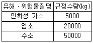
- 0.9
- 1.2
- 1.5
- 1.8
(정답률: 50%)
95. 폭발압력과 가연성가스의 농도와의 관계에 대한 설명으로 가장 적절한 것은?
- 가연성가스의 농도와 폭발압력은 반비례 관계이다.
- 가연성가스의 농도가 너무 희박하거나 너무 진하여도 폭발 압력은 최대로 높아진다.
- 폭발압력은 화학양론 농도보다 약간 높은 농도에서 최대 폭발압력이 된다.
- 최대 폭발압력의 크기는 공기와의 혼합기체에서보다 산소의 농도가 큰 혼합기체에서 더 낮아진다.
(정답률: 62%)
96. 프로판가스 1m3를 완전 연소시키는데 필요한 이론 공기량 몇 m3 인가? (단, 공기 중의 산소농도는 20vol%이다.)
- 20
- 25
- 30
- 35
(정답률: 57%)
97. 니트로셀룰로오스와 같이 연소에 필요한 산소를 포함하고 있는 물질이 연소하는 것을 무엇이라고 하는가?
- 분해연소
- 확산연소
- 그을음연소
- 자기연소
(정답률: 72%)
98. 다음 중 포소화약제 혼합장치로써 정하여진 농도로 물과 혼합하여 거품 수용액을 만드는 장치가 아닌 것은?
- 관로혼합장치
- 차압혼합장치
- 낙하혼합장치
- 펌프혼합장치
(정답률: 57%)
99. 다음 중 파열판과 스프링식 안전밸브를 직렬로 설치해야 할 경우가 아닌 것은?
- 부식물질로부터 스프링식 안전밸브를 보호할 때
- 독성이 매우 강한 물질을 취급시 완벽하게 격리를 할 때
- 스프링식 안전밸브에 막힘을 유발시킬 수 있는 슬러리를 방출시킬 때
- 릴리프 장치가 작동 후 방출라인이 개방되어야 할 때
(정답률: 51%)
100. 폭발원인물질의 물리적 상태에 따라 구분할 때 기상폭발(gas explosion)에 해당되지 않는 것은?
- 분진폭발
- 응상폭발
- 분무폭발
- 가스폭발
(정답률: 74%)
6과목: 건설안전기술
101. 크롤라 크레인 사용시 준수사항으로 옳지 않은 것은?
- 운반에는 수송차가 필요하다.
- 붐의 조립, 해체장소를 고려해야 한다.
- 경사지 작업시 아웃트리거를 사용한다.
- 크롤라의 폭을 넓게 할 수 있는 형을 사용할 경우에는 최대 폭을 고려하여 계획한다.
(정답률: 66%)
102. 다음은 낙하물 방지망 또는 방호선반을 설치하는 경우의 준수해야 할 사항이다. ( )안에 알맞은 숫자는?
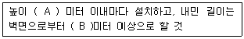
- A : 10, B : 2
- A : 8 , B : 2
- A : 10, B : 3
- A : 8 , B : 3
(정답률: 62%)
103. 강관을 사용하여 비계를 구성하는 경우 준수하여야 하는 사항으로 옳지 않은 것은?(관련 규정 개정전 문제로 여기서는 기존 정답인 2번을 누르면 정답 처리됩니다. 자세한 내용은 해설을 참고하세요.)
- 비계기둥의 간격은 띠장 방향에서는 1.5m이상 1.8m 이하로 할 것
- 비계기둥간의 적재하중은 300kg을 초과하지 않도록 할 것
- 비계기둥의 제일 윗부분으로부터 31m 되는 지점 밑부분의 비계기둥은 2개의 강관으로 묶어 세울 것
- 띠장간격은 1.5m 이하로 설치하되, 첫 번째 띠장은 지상으로부터 2m 이하의 위치에 설치할 것
(정답률: 77%)
104. 깊이 10.5m 이상의 굴착의 경우 계측기기를 설치하여 흙막이 구조의 안전을 예측하여야 한다. 이에 해당하지 않는 계측기기는?
- 수위계
- 경사계
- 응력계
- 지진가속도계
(정답률: 66%)
1⑤. 다음 중 흙막이벽 설치공법에 속하지 않는 것은?
- 강제 널말뚝 공법
- 지하연속벽 공법
- 어스앵커 공법
- 트렌치컷 공법
(정답률: 57%)
106. 다음 중 건물 해체용 기구와 거리가 먼 것은?
- 압쇄기
- 스크레이퍼
- 잭
- 철해머
(정답률: 62%)
107. 다음은 가설통로를 설치하는 경우의 준수사항이다. 빈칸에 알맞은 수치를 고르면?
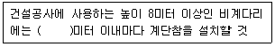
- 7
- 6
- 5
- 4
(정답률: 73%)
108. 중량물을 운반할 때의 자세로 옳은 것은?
- 허리를 구부리고 양손으로 들어올린다.
- 중량은 보통 체중의 60%가 적당하다.
- 물건은 최대한 몸에서 멀리 떼어서 들어올린다.
- 길이가 긴 물건은 앞쪽을 높게 하여 운반한다.
(정답률: 76%)
109. 콘크리트의 압축강도에 영향을 주는 요소로 가장 거리가 먼 것은?
- 콘크리트 양생 온도
- 콘크리트 재령
- 물-시멘트비
- 거푸집 강도
(정답률: 67%)
110. 화물의 하중을 직접 지지하는 달기 와이어로프의 안전계수 기준은?
- 2이상
- 3이상
- 5이상
- 10이상
(정답률: 62%)
111. 다음은 산업안전보건기준에 관한 규칙의 콘크리트 타설작업에 관한 사항이다. 빈칸에 들어갈 적절한 용어는?
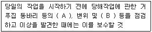
- A : 변형, B : 지반의 침하유무
- A : 변형, B : 개구부 방호설비
- A : 균열, B : 깔판
- A : 균열, B : 지주의 침하
(정답률: 72%)
112. 일반건설공사(갑)로서 대상액이 5억원 이상 50억원 미만인 경우에 사업안전보건관리비의 비율 (가) 및 기초액 (나)으로 옳은 것은?(오류 신고가 접수된 문제입니다. 반드시 정답과 해설을 확인하시기 바랍니다.)
- (가)1.86%, (나)5,349,000원
- (가)1.99%, (나)5,499,000원
- (가)2.35%, (나)5,400,000원
- (가)1.57%, (나)4,411,000원
(정답률: 74%)
113. 표면장력이 흙입자의 이동을 막고 조밀하게 다져지는 것을 방해하는 현상과 관계 깊은 것은?
- 흙의 압밀(consolidation)
- 흙의 침하(settlement)
- 벌킹(bulking)
- 과다짐(over compaction)
(정답률: 52%)
114. 추락방지망 설치 시 그물코의 크기가 10cm인 매듭 있는 방망의 신품에 대한 인장강도 기준으로 옳은 것은?
- 1000kgf 이상
- 200kgf 이상
- 300kgf 이상
- 400kgf 이상
(정답률: 81%)
115. 차량계 건설기계를 사용하는 작업 시 작업계획서 내용에 포함되는 사항이 아닌 것은?
- 사용하는 차량계 건설기계의 종류 및 성능
- 차량계 건설기계의 운행 경로
- 차량계 건설기계에 의한 작업방법
- 차량계 건설기계의 유도자 배치 관련사항
(정답률: 63%)
116. 콘크리트 타설시 안전수칙으로 옳지 않은 것은?
- 타설순서는 계획에 의하여 실시하여야 한다.
- 진동기는 최대한 많이 사용하여야 한다.
- 콘크리트를 치는 도중에는 거푸집, 지보공 등의 이상유무를 확인하여야 한다.
- 손수레로 콘크리트를 운반할 때에는 손수레를 타설하는 위치까지 천천히 운반하여 거푸집에 충격을 주지 아니하도록 타설하여야 한다.
(정답률: 84%)
117. 건설업 산업안전보건관리비로 사용할 수 없는 것은?
- 안전관리자의 인건비
- 교통통제를 위한 교통정리ㆍ신호수의 인건비
- 기성제품에 부착된 안전장치 고장시 교체 비용
- 근로자의 안전보건 증진을 위한 교육, 세미나 등에 소요되는 비용
(정답률: 58%)
118. 크레인 또는 데릭에서 붐각도 및 작업반경별로 작용시킬 수 있는 최대하중에서 후크(Hook), 와이어로프 등 달기구의 중량을 공제한 하중은?
- 작업하중
- 정격하중
- 이동하중
- 적재하중
(정답률: 79%)
119. 산업안전보건법상 차량계 하역운반기계 등에 단위화물의 무게가 100kg 이상인 화물을 싣는 작업 또는 내리는 작업을 하는 경우에 해당 작업 지휘자가 준수하여야 할 사항과 가장 거리가 먼 것은?
- 작업순서 및 그 순서마다의 작업방법을 정하고 작업을 지휘할 것
- 기구와 공구를 점검하고 불량품을 제거할 것
- 대피방법을 미리 교육할 것
- 로프 풀기 작업 또는 덮개 벗기기 작업은 적재함의 화물이 떨어질 위험이 없음을 확인한 후에 하도록 할 것
(정답률: 65%)
120. 다음 와이어로프 중 양중기에 사용가능한 범위 안에 있다고 볼 수 있는 것은?
- 와이어로프의 한 꼬임(스트랜드)에서 끊어진 소선의 수가 8% 인 것
- 지름의 감소가 공칭지름의 8% 인 것
- 심하게 부식된 것
- 이음매가 있는 것
(정답률: 63%)